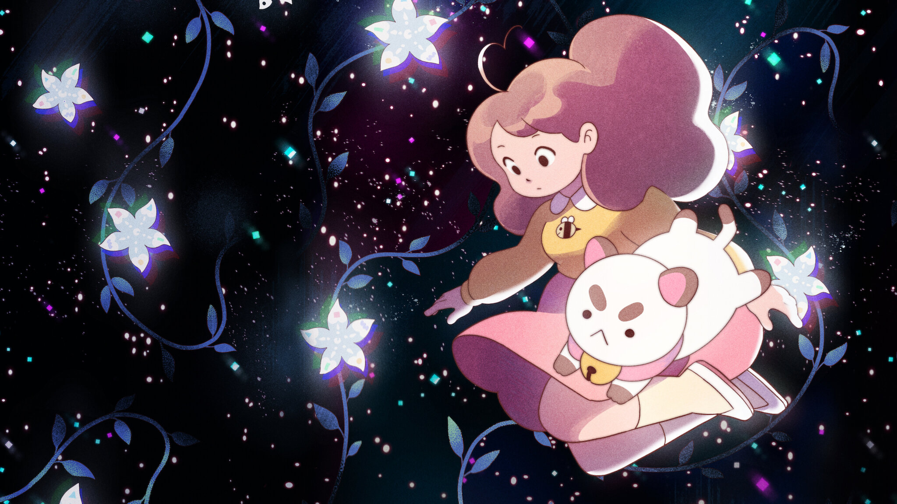
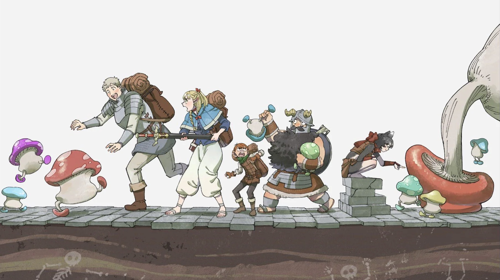
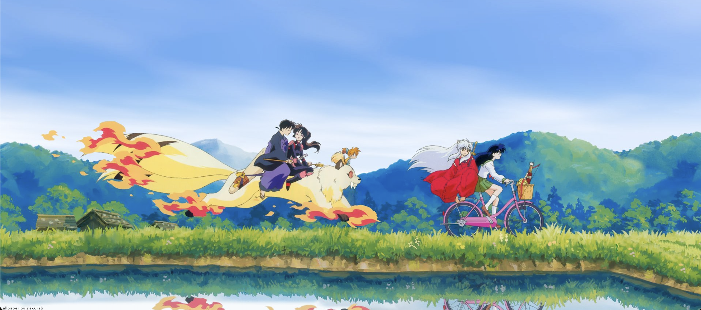

Artist, foodie, cozy couch-potato
ABOUT ME
I love art, anime, video games, Halloween, rabbits, dreams, and nerdy stuff in general. While I have always considered myself an artist, somehow I've made it to my senior year in Software Engineering- not quite the route I expected, but I think it's been a good journey. When I graduate, I have no idea what's in store for me, but I'm looking forward to exploring how I can combine my creativity with my knowledge as an engineer. Designing websites is a great way to get started!
FUN FACTS
Pets
Currenty I have a cat named Twilight and a dog named Tato. They're both super sweet and always want attention.
Travel
My whole life I've moved frequently, because of this I really enjoy traveling and seeing new places- especially out in nature. So far Colorado has been my favorite place to live.
Current Obsession
For some reason, I've been obsessed with the color green lately. Mainly deep forest greens or lighter minty/macha greens. Something about it is so soothing for me.
COMFORT SHOWS

Bee and Puppycat
A cozy show where a girl and her cat... (or maybe a dog...?) go on magical adventures so she can pay the bills and buy snacks.

Delicious in Dungeon
A group of adventurers must go into the depths of a dungeon to save their friend, finding out how to cook up tasty monster meals along the way.

Inuyasha
Traveling through time, a young girl gets stuck in the past. By her side is a stubborn half demon. Together, they must find a sacred jewel that has the power to grant any wish... and definitely not fall in love along the way.